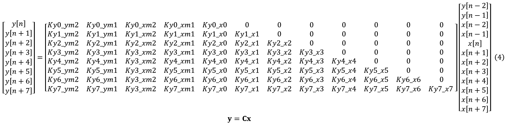
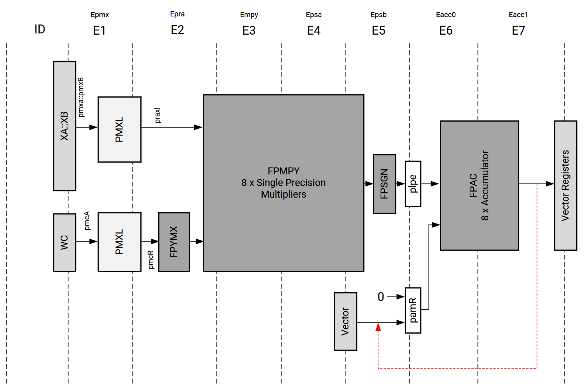
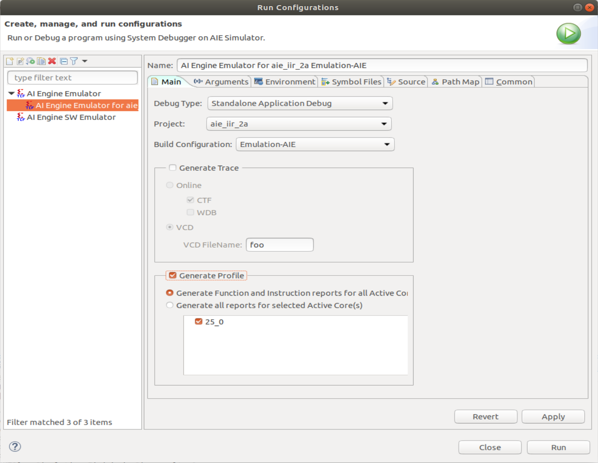
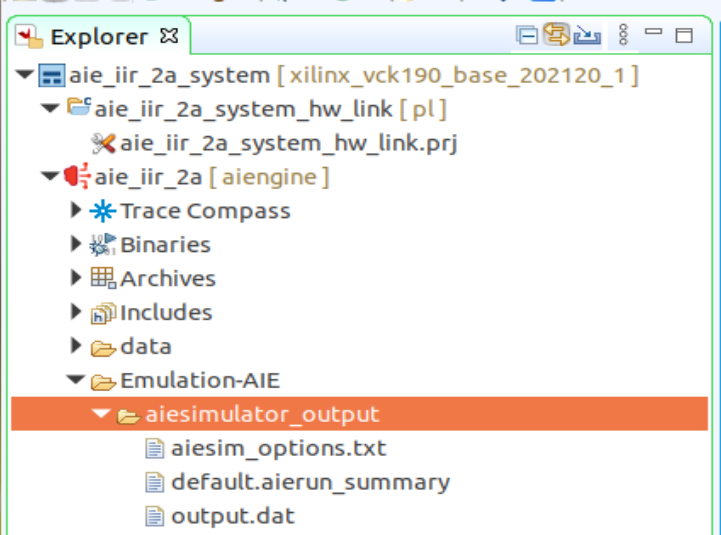
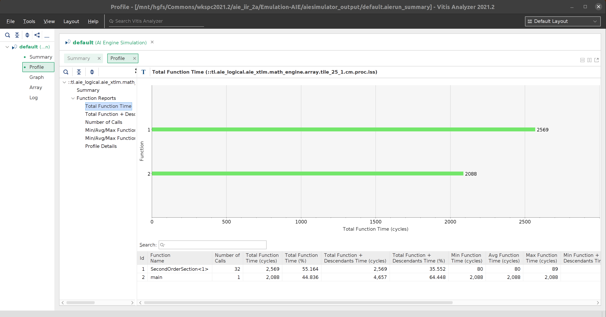
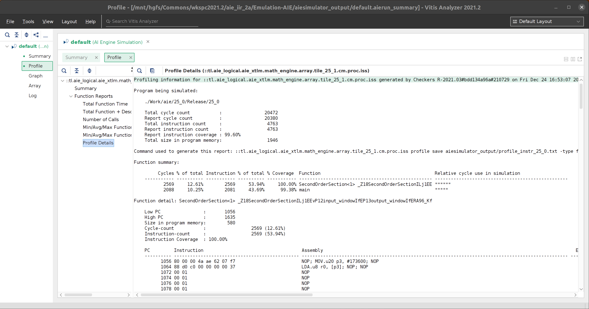
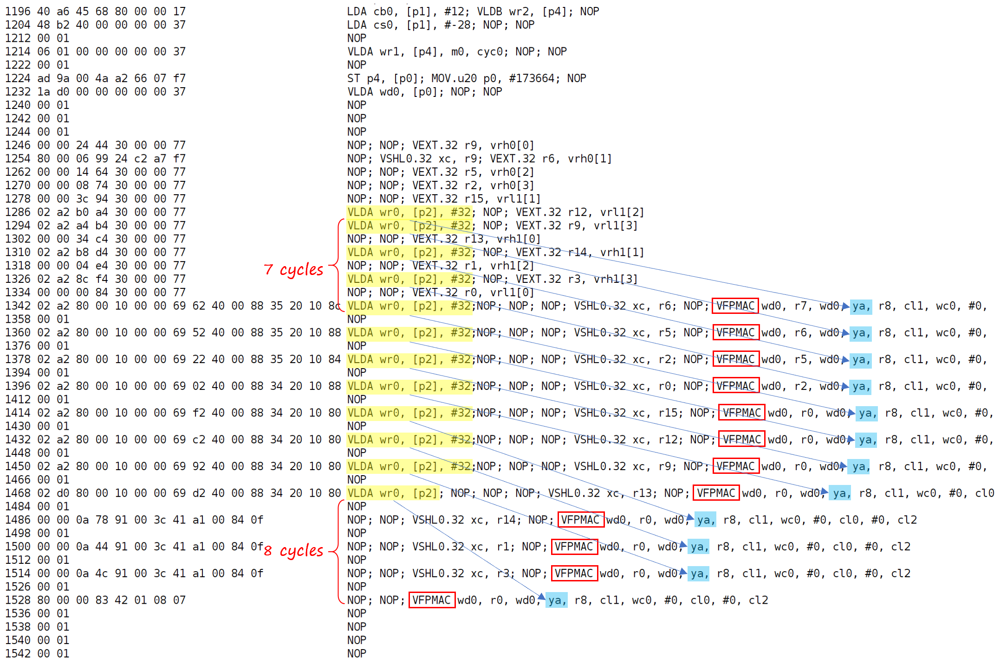
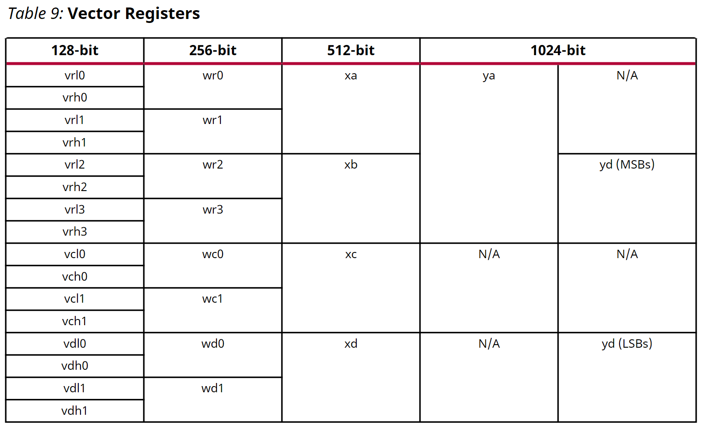

AI Engine DevelopmentSee Vitis™ Development Environment on xilinx.com See Vitis-AI™ Development Environment on xilinx.com |
Implementing an IIR Filter on the AI Engine - Part 2a¶
Version: Vitis 2022.1
Preliminaries¶
In Part 1a, we focused on vectorizing the calculation for a second order section of an IIR filter using Emulation-SW mode. Using eqn. (4) in Part 1a, we saw that we can calculate 8 consecutive outputs by multiplying an 8x12 matrix of constants with a 12x1 vector (composed of 8 consecutive inputs and 4 states).

From Fig. 26 of AM009, we can see that the floating-point vector processor can perform 8 multiply-accumulate operations on floating-point operands in 2 cycles, in E6 and E7. Note that the red dashed arrow in the figure indicates the feedback path for the accumulator. Thus, ideally, 12*2=24 cycles would be the minimum required to calculate 8 floating-point outputs.

In this and succeeding sections, we will attempt to minimize latency and maximize throughput while showing the typical steps to analyze and optimize a design.
Notes:
The Julia scipt
aie_iir_2a.jlgenerates the coefficients for the specified IIR filter, as well as the header file required by the program. It also generates an impulse signal and the filter’s response.The generated header file should be moved to the
srcdirectoryThe generated
*.datfiles should be moved to thedatadirectory
The Julia script
check.jlcalculates the difference between the golden impulse response generated byaie_iir_2a.jland the output of the AI engine.
Kernel Code¶
As a first step, we use the kernel code shown below.
template<unsigned id>
void SecondOrderSection(
input_window<float> *idata, // 8 input samples per iteration
output_window<float> *odata, // 8 output samples per iteration
const float (&C)[96] // RTP port for coefficient matrix
) {
static Vector8f state_reg = aie::zeros<float, 8>(); // clear states on 1st call
Vector8f xreg_hi = window_readincr_v<8>(idata); // fetch 8 input samples
Vector16f xreg = aie::concat(state_reg, xreg_hi); // xreg[4]: ym2; xreg[5]: ym1; xreg[6]: xm2; xreg[7]: xm1; xreg[8:15]: x0:x7
Vector8f coeff;
VAcc8f acc = aie::zeros<accfloat, 8>(); // acc[] = 0
for (auto i = 0; i < 12; i++) {
coeff = aie::load_v<8>(&C[8 * i]); // get a column
float xval = xreg[i + 4]; // aie::mac() requires compile-time constant arguments
acc = aie::mac(acc, coeff, xval); // acc[] += coeff[] * xval
}
Vector8f yout = acc; // transfer accumulator register to vector register to update states
// update states
state_reg = xreg_hi;
state_reg[4] = yout[6];
state_reg[5] = yout[7];
window_writeincr(odata, yout); // write out 8 samples
} // end SecondOrderSection()
The for loop scales each column of the coefficient matrix with an element in xreg and accumulates the result. This performs the matrix and vector multiplication in eqn. (4).
Testbench Code¶
#include "kernel.hpp"
#include "graph.hpp"
#include "C1.h"
using namespace std;
using namespace adf;
// specify the dataflow graph (DFG)
the_graph my_graph;
const unsigned num_pts = 256; // number of sample points in "input.dat"
const unsigned num_iterations = num_pts/8; // number of iterations to run
// main simulation program
int main() {
my_graph.init(); // load the DFG into the AI engine array, establish connectivity, etc.
my_graph.update(my_graph.cmtx1, C1, 96); // transfer coefficients
my_graph.run(num_iterations); // run the DFG for the specified number of iterations
my_graph.end(); // terminate AI engine processing
return (0);
} // end main()
The testbench
initializes the graph
loads the filter coefficients
runs the graph 32 times
terminates all processing
Analysis¶
We begin by setting the Active build configuration to Emulation-AIE and building the design with the default optimization level (xlopt = 1). After a successful build, right-click on aie_iir_2a [aiengine] and select Run As -> Launch AIE Emulator. After a successful simulation, we can now enable profiling. Right-click on aie_iir_2a [aiengine], select Run Configurations..., and click on Generate Profile in the Run Configurations window [Note: it may be necessary to increase the height of the Run Configurations window to see the Generate Profile section].

Click the Run button to re-run with profiling enabled.
After the simulation completes, the “goodness” of the result can be checked by running:
$ julia check.jl aie
The result is “good” when the maximum(abs.(err)) is less than eps(Float32).
To view the profiler result, in the Explorer pane, expand Emulation-AIE and aiesimulator_output.

Double-click on default.aierun_summary to open the report in Vitis Analyzer.
In the Vitis Analyzer window, click on Profile in the browser pane (leftmost pane), then Total Function Time to show the number of cycles consumed by each function.

Note that the kernel function, SecondOrderSection<1> was executed 32 times and ran for a total of 2,569 cycles. Each function call consumed 2,569/32 = 80.28 cycles. The minimum function time is 80 cycles and the maximum is 89 cycles. This implies that the first call consumed an additional 9 cycles (89 + 31 * 80 = 2,569).
Another item of interest is the top-level main function which calls my_graph.run(), which in turn, calls SecondOrderSection<1>. The Total Function + Descendants Time (cycles) column shows the number of cycles consumed by that function, including all other routines called within it. This includes setting up the heap and stack, initialization, actual processing, etc. For this implementation, 4,657 cycles were used to process 256 samples, or 4657/256 = 18.2 cycles/sample. Assuming that the AI engine runs with a 1GHz clock, the throughput is then 1e9 cycles/sec / 18.2 cycles/sample = 54.945Msamples/sec.
Note that the main processing occurs in SecondOrderSection<1>, which consumes 2,569 cycles. Thus, there are 4,657 - 2,569 = 2,088 unavoidable “overhead” cycles which are not used for sample processing.
Click on Profile Details to view the generated assembly code.

Scroll down to where the VFPMAC assembler mnemonics become visible.

From the kernel code, note that the statement:
acc = aie::mac(acc, coeff, xval); // acc[] += coeff[] * xval
generates the VFPMAC mnemonic (vector floating-point multiply-accumulate). Also note that the for loop has been unrolled, and that there is a NOP (no operation) between each VFPMAC to account for the 2-cycle floating-point accumulation latency.
VFPMAC uses a 1024-bit y register as an input buffer (see Table 9 of AM009).

The ya register is composed of the 256-bit wr[0:3] registers. For this example, the wr0 register is updated with the columns of the coefficient matrix using the VLDA (vector load A) mnemonic. The VLDA mnemonic transfers 8 floating-point values from data memory to a vector register. In this example, there is a 7 cycle latency from the VLDA mnemonic (loading data into wr0) to the time the data is used for computation with VFPMAC.
Conclusion¶
We showed how to calculate a floating-point 8x12 matrix and 12x1 vector multiplication using a for loop and some high-level intrinsics (AI engine APIs) in 80 cycles. We also showed how to use Vitis Analyzer to view some statistics of the generated program (e.g. cycles consumed) as well as examine the generated assembler code.
In Part 2b, we will attempt to further optimize the program to achieve a multiply-accumulate operation on every cycle.
Support¶
GitHub issues will be used for tracking requests and bugs. For questions go to forums.xilinx.com.
License¶
Licensed under the Apache License, Version 2.0 (the “License”); you may not use this file except in compliance with the License.
You may obtain a copy of the License at http://www.apache.org/licenses/LICENSE-2.0
Unless required by applicable law or agreed to in writing, software distributed under the License is distributed on an “AS IS” BASIS, WITHOUT WARRANTIES OR CONDITIONS OF ANY KIND, either express or implied. See the License for the specific language governing permissions and limitations under the License.
© Copyright 2021 Xilinx, Inc.